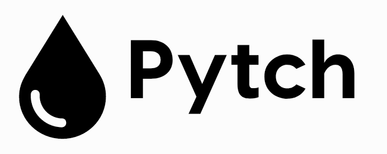

Pytch is currently written in Python 3.7. To install Pytch, run:
pip install pytch
Create the file helloworld.pytch with this content:
helloworld.pytch
print("Hello, world!")
Then run the pytch run command:
pytch run
pytch run path/to/file.pytch
It should produce this output:
Hello, world!
You can try out features interactively by launching the REPL with pytch repl:
pytch repl
$ pytch repl Pytch version 0.0.1 REPL >>> print("Hello, world!") ... Hello, world! >>>
